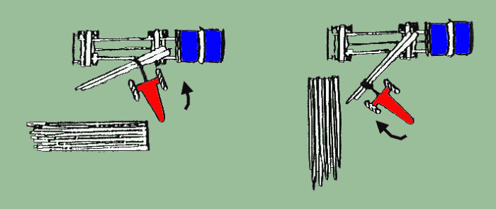
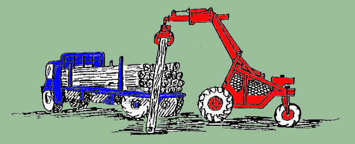

|
INFORME TÉCNICO TECFOR Nº 04 |
Carguío con Trineumático
Sin duda
la característica más notable del trineumático TECFOR
, es su gran versatilidad , pues puede destinarse tanto
a faenas de raleo como a aquellas de tala rasa , desarrollando actividades de engavillado , extracción ,
clasificación , almacenamiento y carguío . Este último será el tema que abordaremos
en el presente informe .
El TEC
puede ser usado para la carga de una variedad de productos que incluyen pulpa corta , estacas , pulpa del largo
del árbol y trozos aserrables de hasta 2 toneladas . Su rápida maniobrabilidad y velocidad junto
a su reducido radio de giro y tamaño le permiten trabajar en canchas pequeñas , convirtiéndolo
en un equipo ideal para el carguío de esa amplia gama de productos . Sin embargo la capacidad de levante
del trineumático limita su productividad , especialmente en madera larga , donde debe manejar las trozas
por una punta a la vez .
En el Informe
Técnico N° 01 " Clasificación y almacenamiento en cancha con trineumático " se analizaron las consideraciones de disposición de acanchamiento.
Estas mismas pautas se aplican para el carguío . Lo más importante es mantener distancias de viaje
cortas para el TECFOR
. De este modo los camiones se deberán colocar lo más cerca posible de las rumas , especialmente
de aquellas con las trozas aserrables más grandes o con árboles enteros , material que se maneja
de un extremo a la vez . El trineumático tiene también la capacidad para cargar trozos desde el costado
o desde el extremo . Esto da mayor flexibilidad para la disposición del acanchamiento y para la ubicación
del camión . A continuación se muestra la ubicación sugerida de los camiones en relación
a las pilas .

Por lo general el TECFOR destina
sólo parte de su tiempo a cargar . En el tiempo restante se puede utilizar clasificando , almacenando ,
extrayendo o engavillando . Existen diversas técnicas para cargar camiones y carros de ferrocarril , algunas
de las cuales se muestran a continuación :
A.- Metro ruma
Figura
1 : Trineumático en el carguío de un camión
con pulpa corta , desde el extremo posterior del camión.
Figura
2 : A diferencia de un cargador frontal , el TECFOR también
puede cargar el camión por el lado . Ello permite usar dos equipos , uno por cada lado , para así
disminuir el tiempo de carga .
Figura
3 : La operación tradicional es con trozos de hasta
8 m , donde es aún fácil tomarlos con la garra por su centro de gravedad y levantarlos sobre los
montantes del camión .
 Figura
4 : Sin embargo , el camión también se puede
cargar desde atrás : el primer paso es levantar un extremo de la troza sobre el camión .
Figura
5 : Luego se levanta la troza en el otro extremo y se sube
al camión con vaivén .
Figura
6 : Aquí el TECFOR toma los extremos gruesos de las trozas y las coloca sobre el camión.
Figura
7 : Luego se coge el otro extremo de la troza y se levanta
sobre los montantes , para entonces acomodar la carga .
B.- Trozos aserrables
C.- Trozos de árboles enteros
Y recuerde : ¡ TECFOR ES TECNOLOGÍA FORESTAL a su servicio !